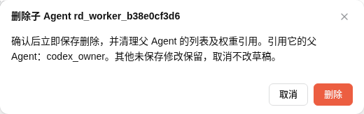
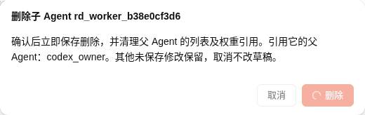
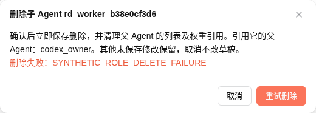
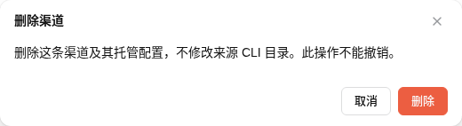

2026-10-25 · 实际 Chrome · http://127.0.0.1:4738。验收现有未提交补丁；HEAD 4f9efefa835150c13a781c03995bc93dc1f3c5fc，3 个相关文件 SHA-256 见版本附件。未运行单测，也未把 owner 单测结果作为浏览器证据。
| 路径 | 实际结果 |
|---|---|
| 取消 | 角色、父引用和后端 revision 完全不变。 |
| 受控 pending | 仅替换本任务 window.weaver.savePolicy 传输边界；一次提交调用，确认与取消均 disabled；Escape 后弹窗仍在。 |
| 合成失败 | 角色和父引用仍在；弹窗显示失败与“重试删除”。该失败没有到达后端。 |
| 恢复真实接口重试 | 最终一轮真实 savePolicy 只调用一次；未点击顶部保存，角色、父列表及权重引用立即从后端消失，modal 关闭。 |
| 其他草稿 | codex_sol_med 用途说明修改未保存；删除后草稿仍保留，后端该角色与所有原有字段哈希保持基线。 |
| 账号页删除 | 临时 API 渠道删除弹窗无角色引用警告；实际 UI 删除后后端无该渠道。 |
全部运行累计：5 次真实角色删除提交 / 5 次成功；3 次真实渠道删除提交 / 3 次成功；5 次 fixture 初始化提交。最终稳定完整流程执行三轮；早期选中切换与通知混淆的探索采证已废弃，附件只保留最终一轮有效状态。5 次合成拒绝与真实提交分开计数。
通过本任务 Chrome 的 CDP 按弹窗实际边界直接采集；不保留背景账号信息，也未重绘或修改截图内容。




浏览器 HTTP 400 共 8 次，均为本包停用渠道自动 listEngineModels 的预期边界；意外应用 HTTP 失败 0，console error/warn 0，未捕获 JS 错误 0。单独的初始化脚本漏 Origin 导致 1 次 403，补上同源头后成功，未发生写入。合成 savePolicy 拒绝共 5 次；未诱发真实后端故障。旧草稿改名歧义保护未触发、未单独验收。早期不稳定采证不作为产品故障或通过依据。
初始 revision 63，最终 76；config 和 blocks 均与初始规范化 SHA-256 完全相同。所有原有渠道、角色及其他配置字段逐项哈希相同，自有角色/渠道和父引用均不存在。没有后端补救清理写入；通过 UI 删除精确回收。没有真实凭据、私有认证根、推理/login/额度刷新操作。原传输恢复后显式重读，释放未保存草稿。借用 4738 服务和持久测试库保留，未访问 4737；浏览器/profile 清理状态见 resources.json。